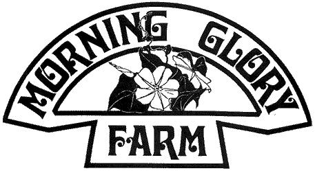
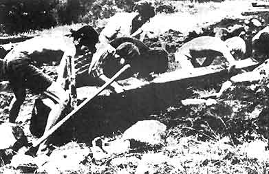

The weather was perfect! Even the crying of the two car sick children and an assortment of frayed adult tempers could do little to dampen the enthusiasm of visiting one of Ontario's first rural hip communities.
Situated in northeastern Ontario, five rural communal farms have been formed in the last year by young adults in search of life . . . they have found it.
The author and a group of eleven Alternate Society menbers from Toronto spent five days living, working and grooving on a 100-acre farm known as Morning Glory Farm. The meals were an adventure in themselves: Apple pan dowdy, fresh baked corn bread, soy bean concoctions, natural cereal breakfasts and many other wholesome, naturally delicious foods untainted by Standard Brands or General Foods.
O n arriving, we were amazed by the serene beauty of the scenery. Past glimmering lakes, brooding hills, fields that spoke of limitless and unfettered freedom, we drove. The children - made ill by miles of droning engine and slowly weaving blacktop - were now wide-eyed and breathless with smiles frozen on their faces in the excitement of their rural roller-coaster up-hill, downhill ride.
After a comedy of wrong turns . . . the splendor of Morning Glory Farm!
Most of the farms in the area are without electricity, though the power lines run by most farms. Morning Glory is no exception. We left the power line (and, with it, the last vestage of organized society) behind and travelled a half mile through a creek bed valley and up the hill to our new home.
Morning Glory is a group of well kept and sturdy buildings situated on 100 acres of rolling greenery crossed with charming stone fences and stands of beautiful fir trees. The soil is similar to that of the area in general; rich sandy loam.
The owner, Mike, is a healthy and purposeful 18-year-old of amazing ability and inventiveness. His farm has eight or nine buildings and a large, comfortable house made warm with an abundance of human love. Some buildings are being converted to serve other purposes: The smoke house is being transformed into a sauna and the hay loft to a music and play room.
To solve the problem of cold storage for food, Mike has single-handedly dug an 8 x 4 x 8 foot hole that will be his huge underground freezer.
Morning Glory has 1/4-acre planted with various vegetables that will suffice to feed the four permanent members through the winter. Any surplus produce will be traded with other hip farmers in the area for items Mike may lack.
The hip farmers of the area have a deep and abiding love for the land. They practice organic farming. That is, no insecticides or artificial fertilizer. All garbage of organic nature is saved and dumped on the gardens. When the suckers run in the local creeks, they are netted and used for fertilizer as the Indians have done for centuries. . .these fish are considered "coarse" and no limits have ever been set on catching them. Pollution and poisoning of man's environment are two things the hip farmers are leaving behind.
We spent the first day in wonder at the undertaking, and early the next morning weeded a large part of the garden. The author was first in the garden to start the weeding and - because he could find no substantial argument in favour of staying dressed in the warm morning sun - stripped nude. The second worker kept his clothes on until he, too, felt unable to justify so doing. By noon men, women and children were busily changing their winter whites to summer tans (or reds, in some unfortunate cases).
The meals are prepared in the "summer kitchen", a separate building, so that the heat from the wood-burning stoves will not mar the coolness of the house in summer. However, the evening meals are eaten in the main house by the soft light of coal oil lanterns.
In the cool of the evening, the community exchanges its functional dress for beautiful colourful capes and robes for peaceful walks of meditation through the countryside . . . to groove on bright and limitless stars, the sounds and smells of the evening air and the meaning of one's own existence.
Another day, and a house raising at a neighbourhood farm. Will - a handsome, steel-spectacled and well-tanned man of nineteen years - bought a 15 acre spread ($450) and an abandoned log school house ($50) and - after having the logs dragged by tractor to his spread - proceeded to erect his new home.
All the people from the hip communities in the area gathered at his place at 9 o'clock on a sunny morning and strained their muscles to place the large, heavy logs into position. None had experience in construction - few in any job entailing physical labour - but the building was raised in one day of laughter, friendship and cooperation.
The women prepared their special recipes and, at dinner, I had the most incredible meal of my life. Under a magnificent shade tree (Will's home until the house is ready) we pitched into a myriad array of delicious foods laced with love and laughter.
A shortage of cutlery only added to the fun. Delicious pea soup was passed around in a great pot accompanied by one large spoon. Next came a truly wonderful salad that was served in an equally large pot and eaten with the fingers. Following that was an array of fresh-baked corn breads, wheat cakes, robust stew (the same spoon doubled here), apple pie, unpasteurized fresh milk still warm from the cow and countless other treats. It was easy to pity the overclothed well-managed patrons of the Royal York who had to accept the pomp and ceremony that is offered by that establishment back in the "big smoke".
The house up and the work done, we were cooled by a sudden summer storm. It was taken advantage of by stripping down and taking an unexpected shower. . . running through the wet fields, laughing and feeling the pure joy of being alive.
As we piled into our rented bus, Will - standing on the overlooking hill - shouted, "Come on back, friends. My house is as much yours now and it always will be." We knew and felt that was true.
Morning Glory, we love you . . . but we will have our own land and our own lives. The cost of Mike's farm was unbelievable: $4300 with yearly taxes of $50. Will's place, with its self-built home, cost $500.
There is much land available at incredibly low prices. Of the 12 people who went on the trip, six are buying a plot of 35 acres - complete with house and six buildings - for $2,000. Two others are also buying land next spring. I'll buy land as soon as I get together a small group of people who are compatible and want a better life.
|
 |
 |
|